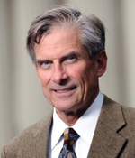

15th Annual Sidhartha Maitra Memorial Lecture

-
- January 28th, 2016
- Time: 7:30 p.m.
- Location: Music Center Recital Hall
- Complimentary parking is available in the Performing Arts parking lot
- Free and open to the public. Space is limited, registration is required.
William D. Adams
Wicked Problems: The Humanities in the Time of STEMDr. William D. Adams was nominated by President Barack Obama as the 10th Chairman of the National Endowment for the Humanities (NEH) and confirmed by the Senate in July 2014. Dr. Adams previously served as President of Colby College in Waterville, Maine from 2000 until June 2014, and as President of Bucknell University from 1995 to 2000. He was Vice President and Secretary of Wesleyan University from 1993 to 1995, and was Program Coordinator of the Great Works in Western Culture program at Stanford University from 1986 to 1988. Earlier in his career, he held various teaching positions at Stanford University, Santa Clara University, and the University of North Carolina. Dr. Adams served in the Vietnam War as a First Lieutenant in the U.S. Army. In 1977, he became a Fulbright Scholar and conducted research at the École des Hautes Études and the École Normale Supérieure in Paris, France. Dr. Adams received a B.A. from Colorado College and a Ph.D. from the University of California, Santa Cruz.